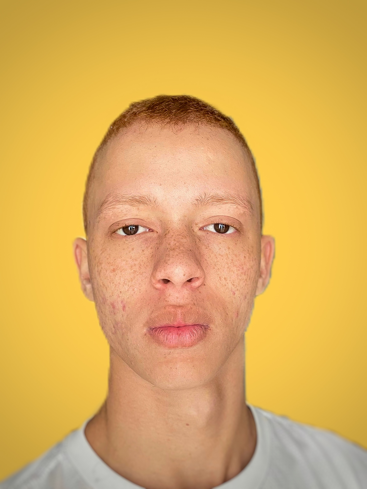

Itallo Otavio
Gostaria de me apresentar como um entusiasta da tecnologia e um estudante dedicado no campo de Análise e Desenvolvimento de Sistemas. Estou comprometido com o aprendizado contínuo e sempre busco oportunidades para me desafiar e crescer profissionalmente. Tenho um olhar atento aos detalhes, sou organizado e tenho habilidades de trabalho em equipe, que acredito serem essenciais para o sucesso no campo de desenvolvimento de sistemas. Se houver uma oportunidade de estagiário ou qualquer outra forma de contribuição, ficaria honrado em fazer parte do time.

O "Lar Animal" é uma plataforma web desenvolvida para conectar ONGs, grupos de proteção animal, voluntários e tutores que desejam resgatar, cuidar e adotar animais vulneráveis. A aplicação facilita o acesso a informações e serviços essenciais, promovendo uma rede de apoio eficiente para o bem-estar dos animais.

O "PUCFLIX" é uma aplicação web para streaming de vídeo, oferecendo uma experiência de consumo de filmes e séries acessível e intuitiva. A plataforma proporciona acesso a uma vasta biblioteca de conteúdo, seguindo as melhores práticas e tendências de mercado.
O ProgIors é uma aplicação inovadora inspirada no Duolingo, voltada para o aprendizado interativo de linguagens de programação. Assim como o Duolingo, o ProgIors utiliza uma abordagem gamificada para oferecer uma plataforma divertida e eficaz para aspirantes a desenvolvedores.

Projeto em andamento

Projeto em andamento

Projeto em andamento